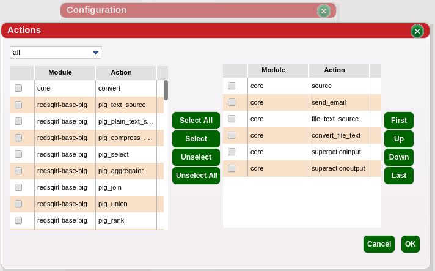

Tabs are a way of ordering and organizing actions together. Many tabs can be created to hold actions. It may be a good idea to add actions to a tab that may be used often in the same type of workflow. The action footer can be updated with your concent each time a new package installation have been detected.
| Action Footer with user defined tabs | |
| Opening Tabs editior can be done by clicking this symbol | |
| Create a new tab by clicking the plus symbol. You can also rename a tab in this view. | |
| Edit the content of the tab in this view. The actions are organized by package and models on the left. The actions available in your menu are on the right. core contains the actions that Red Sqirl provides directly |  |